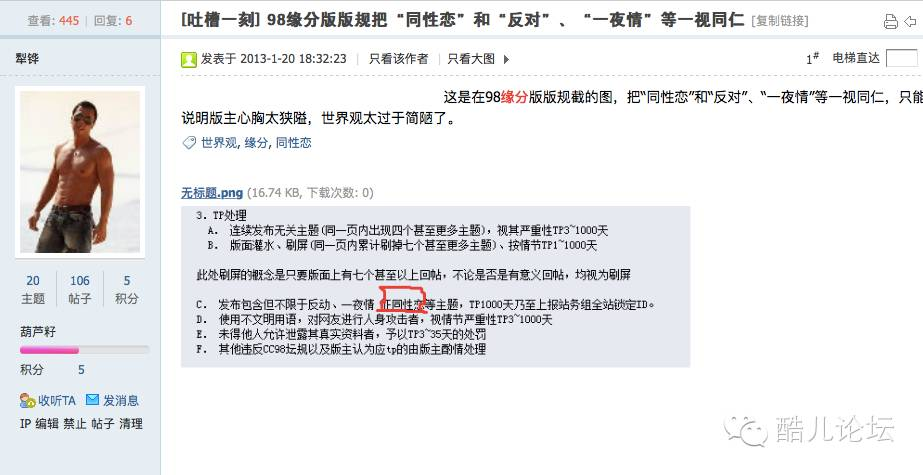

首发在@圆桌骑士会
浙大校内论坛CC98“缘分天空”版规对同性恋征友的禁止，其实早有人注意，然而发到酷儿论坛后反响寥寥，终于在最近又掀起波澜。

在这个贴里，贴主的第一反应并非是可能更“直觉”的歧视，而是版规将同性恋与反动、一夜情并列在一起的污名化。相比于2010年以前“心灵之约”板块直接而不给理由的同性恋话题禁令，这条版规背后的隐喻更加让人失望。抛开诛心的猜测，版规的制定者至少缺失了语言上的尊重，虽然我更相信这是一种“无意识”下的列举，却也反映出了同性恋的大众形象。
这样的第一反应也可以看出伤害的程度：长期“习惯”了区别对待的性少数，在面对无端的指责面前还是会表达自己的不满，甚至是愤怒。但是当这种情况出现在校园，出现在权力地位不平等的学校-学生、师生之间的时候，出现在异性恋多数的学生群体中的时候，表达不满、不舒服的勇气和渠道被压抑了。我不算是一个勇敢的人，在动物学课上听某老师用艾滋病、多性伴来形容整个同性恋群体的时候，我在不满的同时也无心、无力告诉他这不是事实，我就是一个一直接触MSM人群的艾滋检测志愿者。这样的事情发生在大英课上，发生在精神卫生课上(WHO95年、中国01年就已经把同性恋从精神疾病中去除）、发生在更多的寝室夜谈、98心灵板块和QQ群里，而我只能从同志朋友口中，从同性恋的社交网络上听说、看到人们讨论这样的问题的存在。
来源：http://www.glaad.org/spiritday/global
污名是事实上的谬误，歧视则是情感和价值判断上的暴力。这次的版规讨论中最无法让人接受的就是为“歧视”正名的言论。如果说否认这样的区别对待是歧视，至少还是在道德边界上讨论问题，那么认为歧视可行、是人天然的权利和自由的声明，则不得不让人感到寒心和可笑。寒心的是，百年前自己的族人还是被歧视对象，对歧视可以刻骨铭心，现在不过是在性取向这个属性上变成了歧视别人的一方就忘了当初的感受和体验；可笑的是，伸张自己的自由权利，却不明白权利和义务、自由和责任的对应关系：如果歧视是权利，是自由，那么它对应的责任和义务是什么？它所伤害的别人的自由和权利又是什么（对，这就是歧视和反感的区别）。在歧视背后，没有人是绝对的获益者，就像世上没有永恒的强者。
而否定歧视的人，则忽略了对话双方背后话语权的差异，这甚至在被歧视一方中也存在。就像不管坚信“女性因为生孩子、多休假理应获得更少酬劳”的人多么理直气壮，他都无法忽视这样一个问题：在这个讨论里女性甚至都没有平等的权利来和你协商与参与决策，更不用说女性群体内部也多数以此为常态。在版规讨论中，认为既然已经有了像酷儿论坛这样的同性网站，那么为什么还要让缘分允许同性征友的；认为放开同性禁令也不会有人征友的；认为同性恋不符合道德、法律规范的，并以此否认歧视行为的，都免不了像自言自语，因为在这个过程中，同性恋的声音小到让人听不见，同性恋的现实状况被默认为了常态与合理。
我还想把一点超前的东西提出来，那就是我其实在前文里已经有暗示的，整体性和个人性之间的矛盾。在版规中，同性恋是作为一个群体被禁止的；在讨论中，出现的甚至也不是群像，而是模糊的、与“异性恋”世界相隔绝的一个整体。Homosexual这个词直到1869年才出现，我们真正建构出同性恋这个群体，是在医学、心理学等用偏离常态、疾病来形容他们的时候。但是事实上，这个群体是一批比光谱还要多元的个体组成的；同性恋群体的内部的差异，不比异性恋和同性恋之间的群体差异小。我不认为缘分版规是在拒绝一个群体，而是在用一种属性，拒绝了一群鲜活的、复杂的、现实的个体，他们可能还带着学霸/学渣的标签，喜好音乐或者五音不全，但是在缘分，他们身上的一个属性就已经将他们拒之门外。
这样的分类不只是发生在同性恋和异性恋身上，也发生在男/女（还记得脸书上的56种性别吗）、贫/富等等属性上，而每一种分类，都会在某一刻成为你被建构、被重视/被忽视的原因；这样的分类还会造成另一种结果，就是永远会有无法被囊括到主流分类里的个体，比如跨性别（是的，浙大里就有）、间性人（拥有两套生殖系统），我们难以知道缘分天空对他们的态度是怎么样的，因为他们甚至不在我们通常的话语体系里。所以，我其实不太想为同性恋说什么，我只想为所有因为这种建构或刻板印象受困的人说些什么；所以，我不想做“同性恋权利倡导者”，我更想做平权倡导者。
那么，现在应该就有人来说我用“政治正确”绑架别人了。恩，我不讨厌政治正确，因为它的确是一个急救良药，在很多时刻是避免矛盾的方法。但我也不喜欢它，政治正确模糊了背后问题，用情感和价值判断省略了事实的了解和思考；而利用“政治正确”的污名化来拒绝大众意见，也仍然是转移注意力和思维的偷懒：就因为你是政治正确的，所以你的意见就是值得怀疑的。在心灵里，我见到许多把因为反对同性恋而受到批评的人把这称作“政治正确”甚至是政治站队。且不说讨论的声音中歧视和反对仍然是主流，支持、反对你来我往并未有“话语压制”，即便存在这样的政治正确，也不会影响同性恋权利的正当性和歧视同性恋的不合理。对于这些人来讲，反对、歧视同性恋不会被反驳的现象不是（曾经的）实然而成了必然和应然，而出现不同的声音，毫无疑问是同性恋者绑架的问题。我想借用一篇谈论女性主义的文章里的话来回答这样的想法：“能否对自己和他人的行为保持一份反思，能否对习以为常之事物多一句追问”。我觉得还可以叫这个“求是”。
PS. 作者其实只认为反对和同性恋放在一起是污名，而一夜情不是：两个成年人自愿的性行为不需要他人评判。